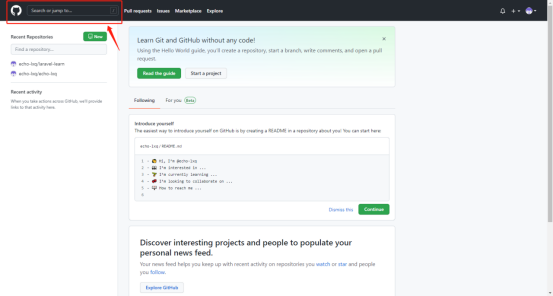
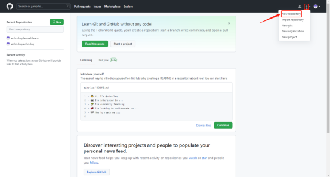
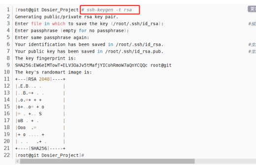
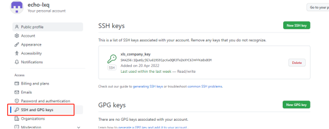
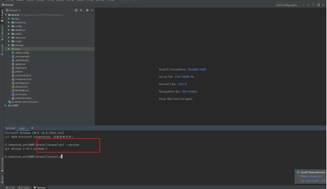

GIT
一、Github使用
- 访问github官网 https://github.com/ 注册账号并登陆
- 若访问或下载的时候慢打不开使用vpn (插件2有免费节点)
- 搜索资源(https://blog.csdn.net/luanfenlian0992/article/details/105684367)

常用的搜索命令：
①.直接搜索需要找的资源名称
②.在开源项目的名称中去搜索 -- in:name XXX
③.再进一步，通过项目的stars数来缩小搜索范围 --
in:name XXX stars:>数字
④.在项目的 README 即详细介绍中搜索关键字 --
in:readme XXX(stars:>数字 forks:>数字)
⑤.在描述(description：)中搜索关键字,同时限定使用的语言（language：）
in:description XXX language:XXX
⑥.搜索范围加上项目更新的时间
in:description XXX language:XXX pushed:>时间
4.新建仓库

二、Git使用
1.git下载 https://git-scm.com/downloads
2.免密链接远程仓库
①.生成秘钥 -- 命令之后三次enter 
②.去对应文件夹复制秘钥后粘贴到github setting > ssh and GPG keys 
3.安装时候可以选择编辑器
4.使用
①.不在编辑器内使用:找到对应的文件夹然后右击git bush here
设置配置文件
- 用户名 git config --global user.name "echo-lxq"
- 邮箱地址 git config --global user.email echo_lxq@163.com
- 默认分支 git config --global init.defaultBranch main
- 解决windows下使用与linux换行区别导致代码导入导出有问题
-git config --global core.autocrlf false <br>
core.autocrlf是git中负责处理line ending的变量，可以设置3个值：true，false，inout 1.当设置成false时，line endings将不做转换操作。文本文件保持原来的样子。2.设置为input时，添加文件git仓库时，git把crlf(回车换行)编程lf(换行)。当有人Check代码时还是lf方式。因此在window操作系统下，不要使用这个设置； 3.当设置成true时，这意味着你在任何时候添加(add)文件到git仓库时，git都会视为它是一个文本文件(text file)。它将把crlf变成LF。
-git config --global core.safecrlf true
git config --global core.safecrlf true #拒绝提交包含混合换行符的文件
git config --global core.safecrlf false #允许提交包含混合换行符的文件
git config --global core.safecrlf warn #提交包含混合换行符的文件时给出警告
PS.windows : CRLF( 回车换行 \r\n )
Linux/Unix: LF (换行 \n)
Mac: LF(现在是换行, 以前是回车( Classic Mac )CR, \r )
初始化 - git init
克隆仓库 - git clone [url] [folder]
更新仓库内容
- git add -u 将项目中修改的部分放到缓存区
-git add . 将当前文件夹内所有内容
-git commit -m [description] 设置本地提交备注
-git remote add [name] [address] 将git address命名为name
-git push [name] [origin] 提交更新 后面的是选择远程仓库的分支
②.在编辑器内使用 -- 直接输入对应命令行即可

5.分支合并问题与使用的基本思路
假设有两个分支 A 、B
A 分支需要合并 B 分支新开发的代码
目前常见的主要有两种合并方式
整体合并：首先切换到A分支，
（1）执行命令：git branch -a 查看当前所有分支。
执行结果：
结果分析：白色代表本地已有分支；绿色代表本地正在使用的分支；红色代表远程所有分支；
（2）执行切换分支命令：git checkout A ，切换到分支A；
（3）执行命令：git pull ，更新代码到最新；
（4）执行命令：git merge B, 此命令的作用就是合并分支 B 上边的全量代码到分支 A；
（5）切换回分支A：git checkout A
（6）用开发工具打开查看合并后分支A的代码，有冲突则解决。
部分合并：首先切换到A分支，
（1）执行命令：git branch -a 查看当前所有分支。
执行结果：
结果分析：白色代表本地已有分支；绿色代表本地正在使用的分支；红色代表远程所有分支；
（2）执行切换分支命令：git checkout A ，切换到分支A；
（3）执行命令：git pull ，更新代码到最新；
（4）执行命令：git checkout B, 切换到分支 B；
（5）查看分支 B 的提交记录,执行命令：git log
执行结果：
根据上述的执行结果，我们可以看到B分支的提交记录，我们选择想要合并的某一个提交记录所涉及到的内容。假设我们要合 并 配置 swagger 的内容，我们拿到上述截图中的对应的 commitid ：9af181504738a9cc52248dc2c09c19394cd480b8
（5）切换回分支A：git checkout A
（6）合并 B 分支 commitid 为 9af181504738a9cc52248dc2c09c19394cd480b8 的内容，
执行命令 ：git cherry-pick 9af181504738a9cc52248dc2c09c19394cd480b8 。
（7）执行命令：git push 。将合并后的内容提交到远程仓库
三、遇到的问题及解决方法
error: Your local changes to the following files would be overwritten by merge
解决方案
根据是否要保存本地修改，有以下两种解决方案
①.保留修改
执行以下三条命令
git stash #封存修改
git pull origin master
git stash pop #把修改还原
注：
git stash：备份当前工作区内容，从最近的一次提交中读取相关内容，让工作区保证和上次提交的内容一致。同时，将当前工作区内容保存到Git栈中
git pull：拉取服务器上当前分支代码
git stash pop：从Git栈中读取最近一次保存的内容，恢复工作区相关内容。同时，用户可能进行多次stash操作，需要保证后stash的最先被取到，所以用栈（先进后出）来管理；pop取栈顶的内容并恢复
git stash list：显示Git栈内的所有备份，可以利用这个列表来决定从那个地方恢复。
git stash clear：清空Git栈
②.废弃修改
核心思想就是版本回退，具体命令如下
git reset --hard
git pull origin master
注：不建议使用第二种。除非你再三确定不需要本地的修改了。